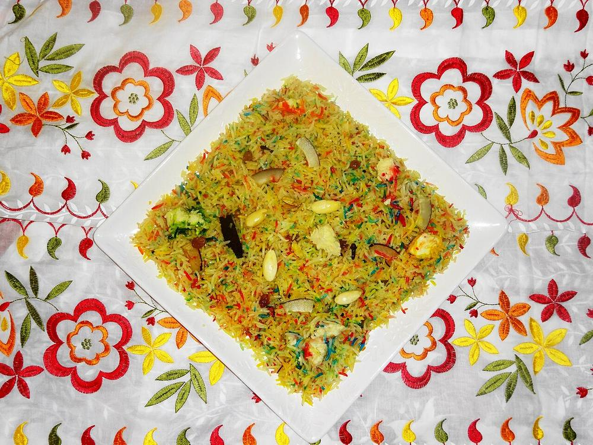

Zarda
saffron sweet rice studded with nuts and raisins, served at the end of a dastarkhwan

Contains: milk, tree nuts
Checked against the ingredient list for ten allergens: milk, egg, fish, crustaceans, tree nuts, peanuts, sesame, mustard, soy and gluten. Brands vary, so read the label on anything new to you.
Ingredients
Quantities for 6.
- 250g, aged, rinsed and soaked 30 minutes Basmati Rice
- 250g Sugar
- 5 tbsp Ghee
- a generous pinch, steeped in 3 tbsp warm milk Saffronthe colour comes from saffron, not food dye
- 6 green, lightly crushed Cardamom
- 4 Cloves
- 1 inch stick Cinnamonoptional
- 60g, crumbled Khoyaoptional
- 12, slivered Almonds
- 12, slivered Pistachios
- 10, halved Cashewoptional
- 2 tbsp Raisins
- 2 tbsp, slivered Dried Coconutoptional
- 1/2 tsp Kewra Wateroptional
- 1.2 litres for boiling, plus 100ml Water
- 1/4 tsp Salt
Cookware
stovetop
Before you start
- Soak the rice 30 minutes and drain it well. Aged long-grain basmati holds its shape; new-crop rice turns to porridge.
- Steep the saffron in warm milk for 20 minutes before you start.
- Have the nuts fried and drained before the rice goes on. The last stage moves quickly.
Method
- Fry the almonds, pistachios, cashews and coconut in 2 tbsp ghee until just gold, 2 minutes, then the raisins for 20 seconds until they puff. Drain and set aside.Raisins go in last and come out fast; they burn in seconds.
- Boil 1.2 litres of water with the salt, half the saffron milk, the cardamom and cloves.
- Add the drained rice and cook uncovered for 6–7 minutes, until the grains are 80 percent done and still firm at the core.Bite one: it should give but leave a chalky centre. It finishes cooking in the syrup.
- Drain thoroughly in a colander and leave 5 minutes to steam dry.
- In a heavy pan melt the remaining 3 tbsp ghee, add the sugar and 100ml water and stir until it dissolves into a thin syrup, 3 minutes.
- Fold the drained rice gently into the syrup with the remaining saffron milk, using a flat spoon and lifting rather than stirring.Stirring smashes the grains. Lift and fold from underneath.
- Cover tightly, put a heavy lid or a weight on top and cook on the lowest possible heat for 15 minutes.
- Uncover: the syrup should be absorbed and the grains separate and glossy. If wet, cook uncovered 3 minutes more.
- Scatter over the fried nuts, raisins, crumbled khoya and kewra water, cover again and rest 10 minutes off the heat before serving warm.
Storage
Keeps 3 days refrigerated. Reheat covered with a teaspoon of water and a knob of ghee, on low or in short bursts in the microwave. It stiffens when cold and loosens as it warms.
Nutrition Low estimate
Low protein: 7 g a serving, 5% of the calories
| Per serving118 g | Per 100 g | |
|---|---|---|
| Calories | 526 kcal | 446 kcal |
| Protein | 6.9 g | 6 g |
| Carbohydrate | 84.9 g | 72 g |
| of which sugars | 49.3 g | 42 g |
| Fibre | 2.0 g | 2 g |
| Fat | 18.6 g | 16 g |
| of which saturated | 11.4 g | 10 g |
| of which unsaturated | 6.3 g | 5 g |
Ingredients given to taste count as zero, so the real figures run a little higher. Estimated from raw ingredients using USDA FoodData Central.
Written and checked against sources, not cooked in a test kitchen. Times, yields, allergens and nutrition are worked out rather than measured, so use your own judgement on doneness and on storing. More in About.